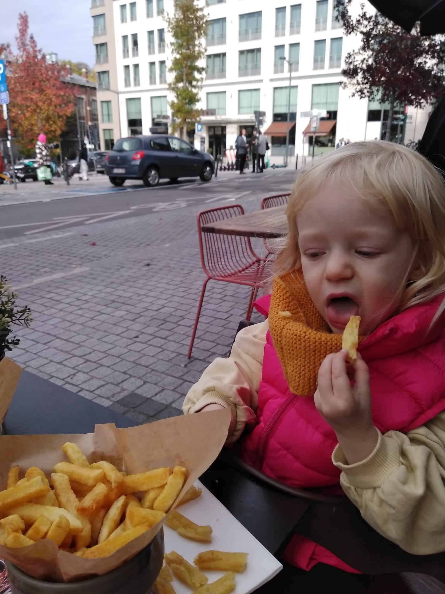

Born on the 3rd of april 1986 in Brussels, Belgium From a greek father and a belgian mother George is destined to live a life as a human on earth He learned a bit of greek through holidays in Greece and did 6 years of dutch classes at school yet he was never good at languages. What George loves is reading. He has been an avid reader for as long as he remembers It is also a well known that George doesn't have the best memory about his life George discovers scifi in his late teenagers years starting with the classics (Asimov, Frank Herbert) he later moves on to loving humanist scifi writers like Ursula K. Leguin, Kim Stanley Robinson and Iain M Banks Until today, George isn't aware that he also needs 3 parts names to love a writer George went to Thailand in 2006 to do 6 months volunteering work And there he met his German partner , now wife,with whom they built a solid home ( where we have lots of space for anyone visiting brussels btw ;) ) and have the most beautiful daughter: Iris
